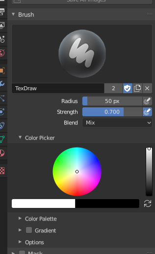

Brush¶

Brush settings.
- Color
The color of the brush. See Color Picker.
Press S on any part of the image to sample that color and set it as the brush color. Hold Ctrl while painting to temporally paint with the secondary color.
- Flip (cycle icon) X
- Swaps the primary and secondary colors.
- Radius
- The radius of the brush in pixels.
- Strength
How powerful the brush is when applied.
- Space Attenuation (padlock icon)
- Attenuate the brush strength according to spacing.
- Pressure Sensitivity (hand and bulged in blue line icon)
- The toggle to the right of the following three settings will enable or disable tablet pressure sensitivity to control how strong the effect is.
- Blend
Set the way the paint is applied over the underlying color. See Color Blend Modes.
- Add Alpha: makes the image more opaque where painted.
- Erase Alpha: makes the image transparent where painted, allowing background colors and lower-level textures to show through. As you “paint”, the false checkerboard background will be revealed. Using a table pen’s eraser end will toggle on this mode.
Tip
In order to see the effects of the Erase and Add Alpha mix modes in the Image Editor, you must enable the alpha channel display by clicking the Display Alpha or the Alpha-Only button. Transparent (no alpha) areas will then show a checkered background.
- Accumulate
- This will allow a stroke to accumulate on itself, just like an airbrush would do.
- Alpha (3D only)
- When this is disabled, it locks (prevents changes to) the alpha channel while painting.
Tilling¶
Reference
| Editor: | Image Editor |
|---|---|
| Mode: | Paint Mode |
| Menu: |
Wraps the stroke to the other side of the image as your brush moves off the opposite side of the canvas. Very handy for making seamless textures.
- X
- left/right
- Y
- top/bottom